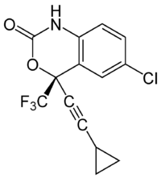
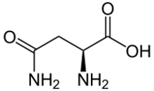
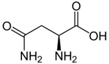

Das Humane Immundefizienz-Virus
Aufgabe der Forscher ist es nun, ein Molekül zu finden, dass geometrisch und chemisch in diese Bindetasche passt. Der Wirkstoff Efavirenz ist ein gutes Beispiel.

Der Wirkstoff Efavirenz (Quelle: Wikipedia)
Natürlich ist der Wirkstoff nicht flach, sondern er hat eine räumliche Struktur.
Klicke auf das obige Strukturbild von Efavirenz, um den Wirkstoff in die Bindetasche zu platzieren. Mit Hilfe der Maus kannst du näher untersuchen, wie sich Efavirenz in die Bindetasche einfügt.
Ein Merkmal des HI Virus ist seine schnelle Anpassungsfähigkeit. Durch Mutationen kann es zu änderungen seines Reversen Transkriptase Proteins kommen, die das Virus resistent gegen den Wirkstoff Efavirenz machen. Eine Resistenz entwickelt sich, z.B. wenn an der Stelle 103 im Protein aus der Aminosäure Lysin ein Asparagin wird.
 
Die Aminosäuren Lysin und Asparagin (Quelle: Wikipedia)

Die Aminosäuren Lysin und Asparagin (Quelle: Wikipedia)
Wie unterscheiden sich die beiden Aminosäuren?
Klicke hier, um Dir die Stelle der Aminosäureposition 103 anzeigen zu lassen.
Da die Aminosäuren unterschiedliche chemische Eigenschaften haben, kann durch die Mutation der Wirkstoff nicht mehr so gut binden. Das Medikament wird wirkungslos.